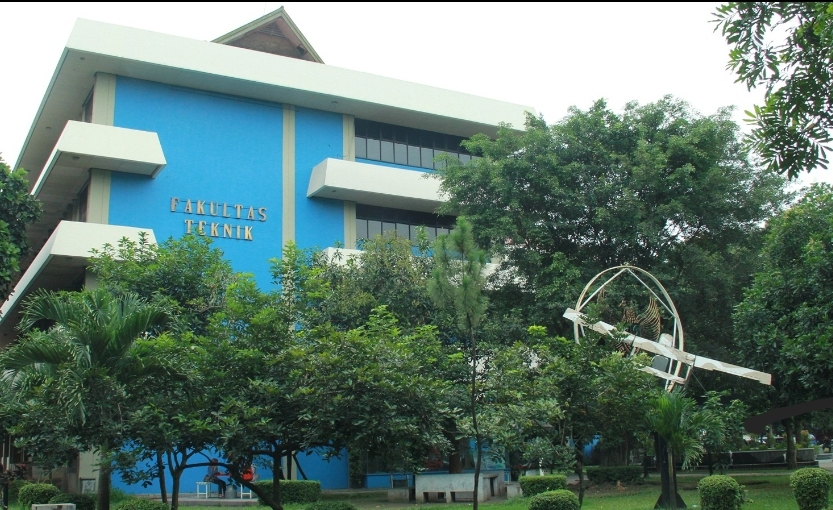
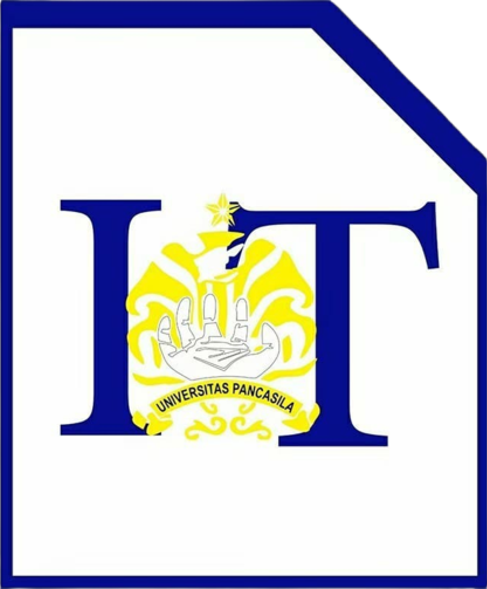

Tentang Fakultas Teknik

Fakultas Teknik Universitas Pancasila merupakan lingkungan pendidikan tinggi yang menyediakan berbagai bidang studi teknik. Salah satunya adalah Program Studi Teknik Informatika yang mempelajari komputasi, pemrograman, dan teknologi informasi.
Selain mengikuti perkuliahan, mahasiswa dapat mengembangkan pengalaman melalui kegiatan organisasi dan berbagai aktivitas kemahasiswaan.
Mengenal IMATIKA

IMATIKA merupakan himpunan mahasiswa yang berkaitan dengan lingkungan Program Studi Teknik Informatika. Himpunan mahasiswa menjadi wadah bagi mahasiswa untuk belajar berorganisasi, bekerja sama, dan mengembangkan kemampuan diri.
Melalui kegiatan kemahasiswaan, anggota dapat memperoleh pengalaman baru, memperluas relasi, serta belajar bertanggung jawab dalam menjalankan kegiatan bersama.
Bidang Kegiatan
- Pengembangan akademik dan teknologi informasi
- Kegiatan organisasi mahasiswa
- Pengembangan kemampuan komunikasi dan kerja sama
- Kegiatan sosial dan kebersamaan
Manfaat Berorganisasi
- Menambah pengalaman di lingkungan kampus.
- Melatih kemampuan komunikasi.
- Belajar bekerja sama dalam tim.
- Mengembangkan rasa tanggung jawab.
Istilah
- IMATIKA
- Himpunan mahasiswa yang menjadi wadah kegiatan dan pengembangan mahasiswa informatika.
- Teknik Informatika
- Bidang ilmu yang mempelajari komputasi, pemrograman, dan pengembangan teknologi informasi.
Informasi Keanggotaan
Mahasiswa yang tertarik mengikuti kegiatan IMATIKA dapat mencari informasi mengenai keanggotaan melalui pengurus atau kanal resmi organisasi.
Langkah Mendapatkan Informasi
- Mencari informasi resmi mengenai IMATIKA.
- Memeriksa informasi persyaratan keanggotaan.
- Menghubungi pengurus untuk bertanya lebih lanjut.
- Mengikuti prosedur pendaftaran jika dibuka.
Jadwal, persyaratan, dan prosedur keanggotaan mengikuti informasi resmi dari organisasi.
Informasi dan Kontak
Berikut beberapa tautan untuk mencari informasi lebih lanjut mengenai kampus dan organisasi.
Catatan: tautan Instagram masih menuju halaman utama Instagram. Gunakan akun resmi IMATIKA jika kamu sudah mengetahui alamatnya. Ganti alamat email contoh dengan alamat email yang benar.